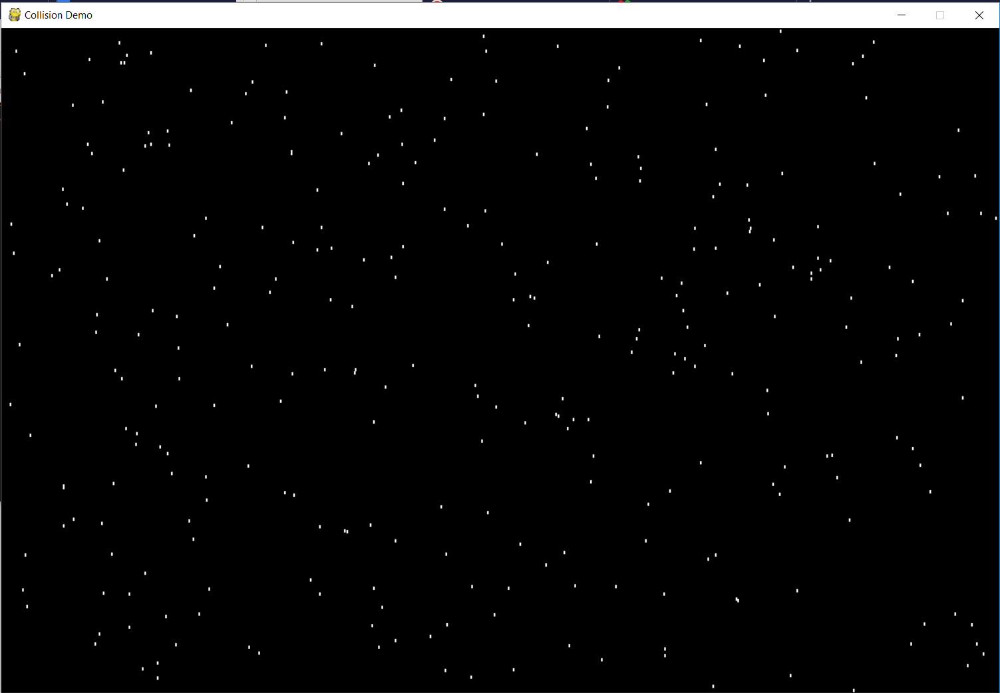
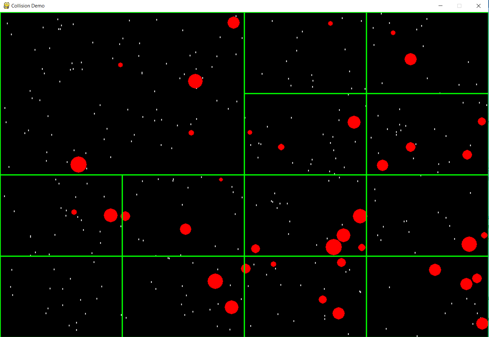
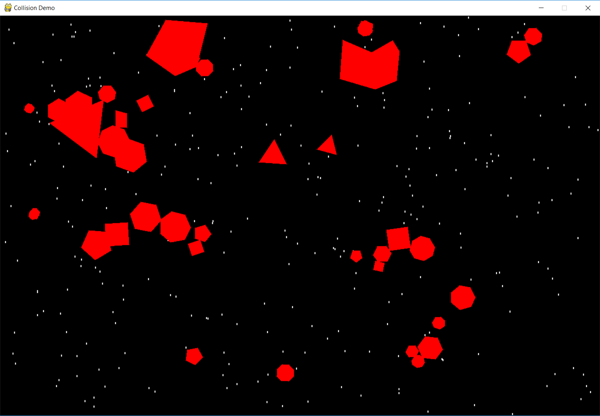
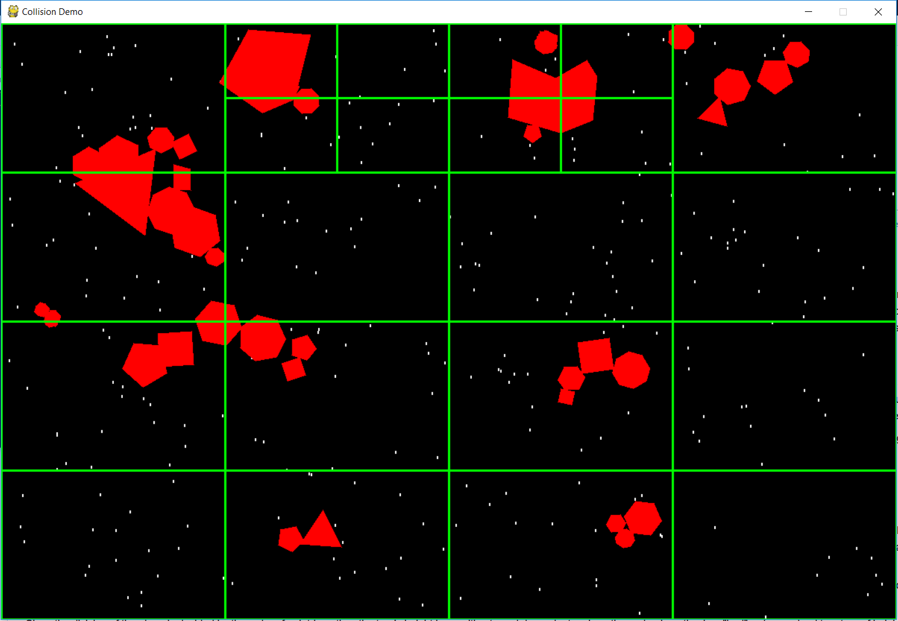
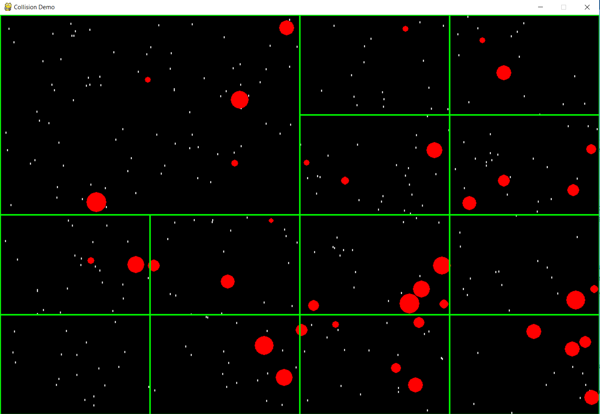
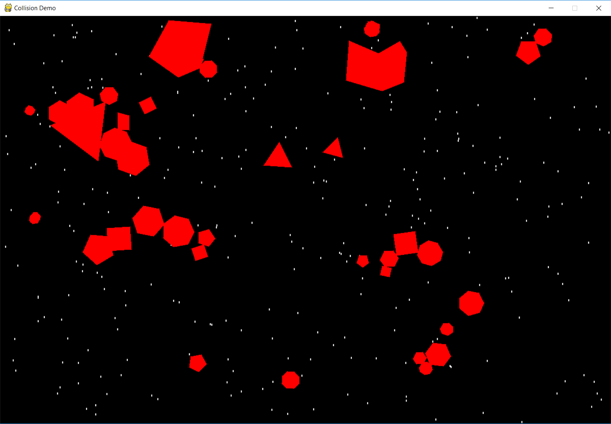
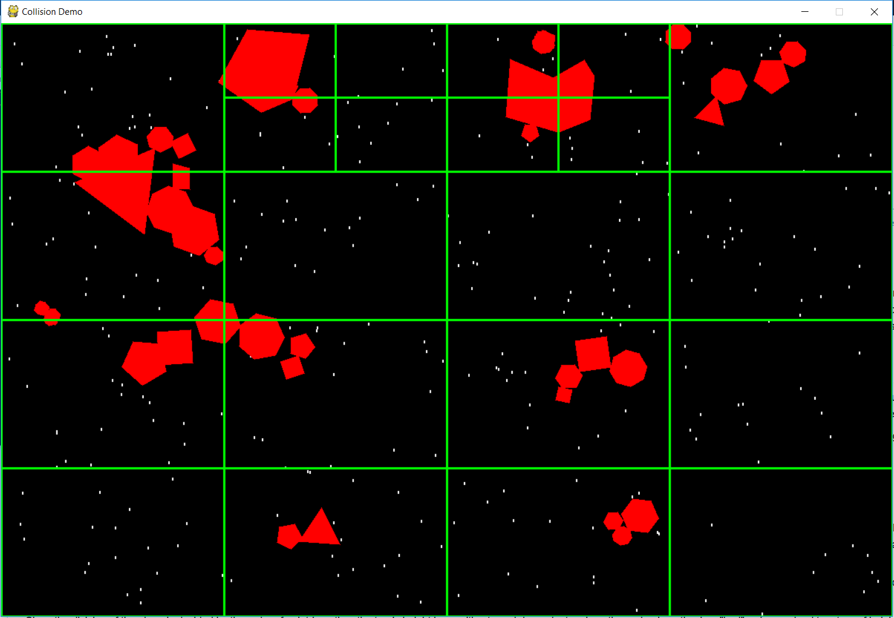

2D Collision Library
Source code is present here
Instructions for running python application
- Pull repo from link provided above
- Install pygame in python enviorment
- Run "python CollisionLibraryDemo.py" from command line
Keyboard input events for application
- Press 1 to enter Polygon mode
- Press 2 to enter Circle mode
- Press a to add objects(circle/polygon)
- Press d to display Quad Trees
- Press r to reset. Reset will clear circles or polygons from the screen
Algorithms used in development
- Regional Quad Tree for spatial parition of screen
- Find nearest objects using Quad Tree for collision detection for any shape(circle/polygon)
- Polygon-polygon collision detection using Welzl's algorithm and Seperation Axis Theorem(SAT)
- Create minimum bounding circle for polygon, check for collision between minimum bounding circles of polygons first
- If Minimum bounding circles collide then check for collision using SAT
- For reference: Algorithms
Screenshots

 




